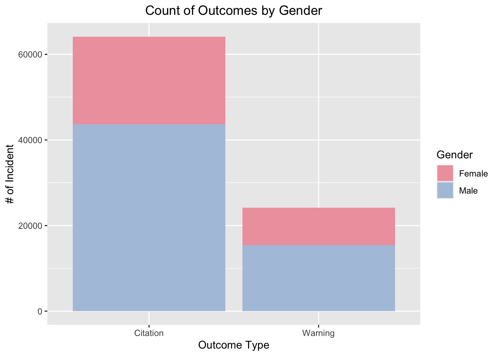

library(tidyverse)
library(ggplot2)
library(dplyr)
library(leaflet)
library(usmap)
library(sf)
library(readr)
library(scales)
library(tidyr)
library(lubridate)
# Read in the raw data for Warnings and Citations
warnings = read_csv("2023_warning_data.csv",
col_types = cols(Warnings_Date = col_date(format = "%m/%d/%Y"),
WEB_ADDRESS = col_skip(), PHONE_NUMBER = col_skip(),
NAME = col_skip()))
citations = read_csv("2023_citation_data.csv",
col_types = cols(Date = col_date(format = "%m/%d/%Y"),
WEB_ADDRESS = col_skip(), PHONE_NUMBER = col_skip(),
NAME = col_skip()))
# Rename some columns
citations = citations %>%
rename(ViolationDate = Date)
# change Gender to sex in warnings and change date column name
warnings = warnings %>%
rename(Sex = Gender)
warnings = warnings %>%
rename(ViolationDate = Warnings_Date)
# Adjust Citations and prepare for Merge
# Assumption that ID is the officer's ID
citations_processed = citations %>%
mutate(
outcome = "Citation",
Gender = case_when(
Sex == "M" ~ "Male",
Sex == "F" ~ "Female",
TRUE ~ "Other/Unknown"
),
Year = year(ViolationDate),
Month = month(ViolationDate),
DayOfMonth = day(ViolationDate),
Time = parse_date_time(Time, "HM"),
data_type = "Citation"
) %>%
select(
outcome, Gender, Year, Month, DayOfMonth, Time, Offense_Description = Charge,
District = DISTRICT, Race, Ethnicity, Latitude, Longitude, OfficerID = ID, data_type
)
# Adjust Warnings and prepare for Merge
warnings_processed = warnings %>%
mutate(
outcome = "Warning",
Gender = case_when(
Sex == "M" ~ "Male",
Sex == "F" ~ "Female",
TRUE ~ "Other/Unknown"
),
Year = year(ViolationDate),
Month = month(ViolationDate),
DayOfMonth = day(ViolationDate),
Time = parse_date_time(Time, "HM"),
data_type = "Warning"
) %>%
select(
outcome, Gender, Year, Month, DayOfMonth, Time, Offense_Description, District = DISTRICT, Race,
Ethnicity, Latitude = Lat, Longitude = Long, OfficerID = Officer_ID, data_type
)
# Combined for ultimate Data coordination!
combined_wc = bind_rows(citations_processed, warnings_processed)
# Add ultimate binary outcome! 0 = Citation, 1 = Warning/ Got out of ticket
combined_wc = combined_wc %>%
mutate(
BinaryOutcome = ifelse(outcome == "Warning", 1,0)
)
## Change to Title Case for District Names
combined_wc$District = tools::toTitleCase(tolower(combined_wc$District))
## Examining Unverified data
## After examination, unverified only makes up 0.0143 or 1.43% of the data set, so we will remove
## because it is a very small portion of the total proportion.
# combined_wc %>%
# count(District) %>%
# mutate(Proportion = n / sum(n)) %>%
# arrange(desc(n))
## Filter out Unverified and NA
combined_wc = combined_wc %>%
filter(District != "Unverified")
combined_wc = combined_wc %>%
filter(!is.na(District))
## Filter out Other/Unknown Gender
combined_wc_mf = combined_wc %>%
filter(Gender != "Other/Unknown")
## Stacked Bar chart for Outcome and Gender
ggplot(combined_wc_mf, aes(x = outcome, fill = Gender)) +
geom_bar() +
labs(
title = "Count of Outcomes by Gender",
x = "Outcome Type",
y = "# of Incident",
fill = "Gender"
) + theme_gray() + theme(plot.title = element_text(hjust = 0.5)) +
scale_fill_manual(values = c("Female" = "lightpink2", "Male" = "lightsteelblue"))